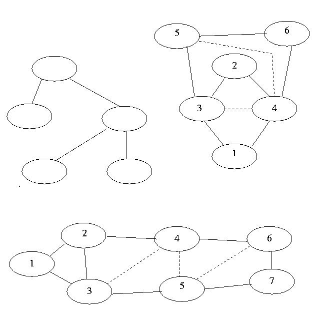

Solution: Look at i) and ii) of Exercise 8
The graph is not triangulated since it has a cycle with 4 nodes without a chord. To get a triangulated graph just add a chord.
First one was already triangulated! The numbers give the elimination ordering.

A complicated solution Simpler, but perhaps slower ones are fine.
Have a look at my approach. Perhaps it would be faster to use a tree-based method.
Last modified: Mon Nov 20 11:08:50 GMT 2006